AOP #
基本概念：
- 编程时将所需逻辑写在切面中
这么做的好处是，让一些公共的逻辑，重复的代码，能够出现在统一的位置，即切面中，方便维护，减少重复代码的开发量。
- 思路上，是通过为某些切面，为某些方法提供行为增强。这种增强可能出现在方法执行前，方法执行后，方法返回前，方法异常时等。
- 实现方法上，出于对某个方法进行前置或后置逻辑的编写的角度，想要通过代理模式来实现功能。
Spring的切面实现，支持了两种代理模式：JDK动态代理（默认）、CGLIB动态代理
Spring的动态代理实现 #
众所周知，代理模式的实现方法就是为当前类或者方法创建代理类
- 实际调用时调用代理类
- 代理类再调用原本方法逻辑，代理类本身可以在调用原本方法前后"编织"入一些定义好的代码，在调用原本方法前后执行"编织"入的方法，实现"方法增强"
- 探讨Spring如何实现动态代理，其实是探讨Spring如何动态创建代理类
- 静态代理是直接硬编码编写代理类，并替换调用方方法调用代理类
- 但是动态代理就需要有一套代码，能根据不同内容的原本类，动态构建一个代理类，并在调用原本方法前后调用切面类内编写的增强方法
静态代理示例 #
class ProxySubject implements Subject {
private RealSubject realSubject;
public ProxySubject(RealSubject realSubject) {
this.realSubject = realSubject;
}
@Override
public void request() {
// 方法调用前的增强代码
System.out.println("ProxySubject: Before calling the real subject.");
// 调用被代理对象的方法
realSubject.request();
// 方法调用后的增强代码
System.out.println("ProxySubject: After calling the real subject.");
}
}
Spring AOP 动态代理源码解析 #
接下来从源码层面逐一剖析Spring是如何实现AOP
- 使用项目：跬步后端项目仓库
- Branch: main
- commit: f2763b5c8308f59a399ad32ae2cdffef8aee1ee0
我的项目采用 SpringBoot:2.7.6 版本，直接引入 spring-boot-starter-aop 包 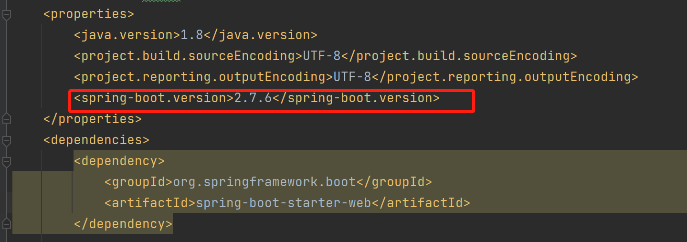 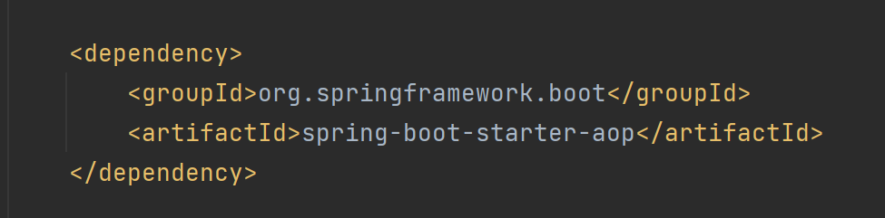
spring-boot-starter-aop 包内含 org.springframework.spring-aop 和 org.aspectj.aspectjweaver 包 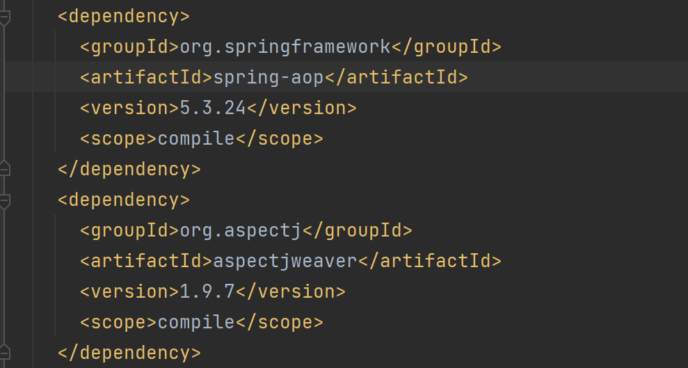
在项目启动类中，加上了 @EnableAspectJAutoProxy 注解开启 AOP 功能，从这里开始往下梳理
@SpringBootApplication
@EnableAspectJAutoProxy
public class Application {
public static void main(String[] args) {
SpringApplication.run(Application.class, args);
}
}
在 @EnableAspectJAutoProxy 注解中，导入了 AspectJAutoProxyRegistrar 类
@Target({ElementType.TYPE})
@Retention(RetentionPolicy.RUNTIME)
@Documented
@Import({AspectJAutoProxyRegistrar.class})
public @interface EnableAspectJAutoProxy {
boolean proxyTargetClass() default false;
boolean exposeProxy() default false;
}
Spring启动过程中会对配置类进行解析和处理，其中包括对各种注解的解析
当扫描到 @Import 注解时，会根据导入的类进行对应的处理，当前导入的 AspectJAutoProxyRegistrar 类是 ImportBeanDefinitionRegistrar 接口的实现类，对于这样的类，Spring 执行时会将它实例化，并执行其中的 registerBeanDefinitions 方法
registerBeanDefinitions 会调用 registerAspectJAnnotationAutoProxyCreatorIfNecessary 方法
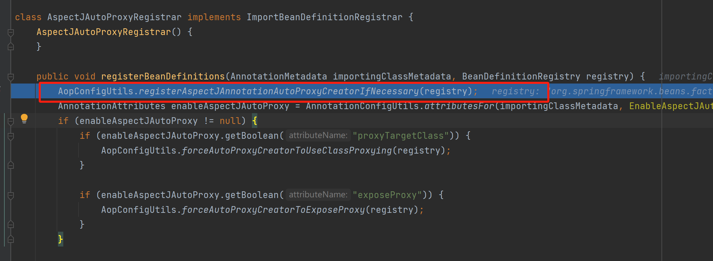
在 registerAspectJAnnotationAutoProxyCreatorIfNecessary 方法调用链上，会将 AnnotationAwareAspectJAutoProxyCreator 类定义注册到 Spring ，Spring容器启动时会根据 BeanDefinition 创建 Bean
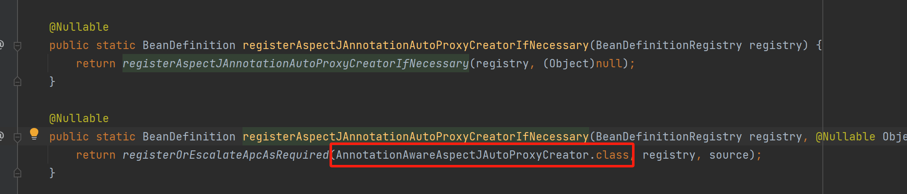
同时 AnnotationAwareAspectJAutoProxyCreator 的父类 AbstractAutoProxyCreator 实现了 BeanPostProcessor 接口的 postProcessAfterInitialization 方法，在容器内 Bean 初始化后，Spring 容器会遍历所有注册的 BeanPostProcessor 实现类，并依次调用它们的 postProcessAfterInitialization 方法，所以该方法会经过所有的 Bean
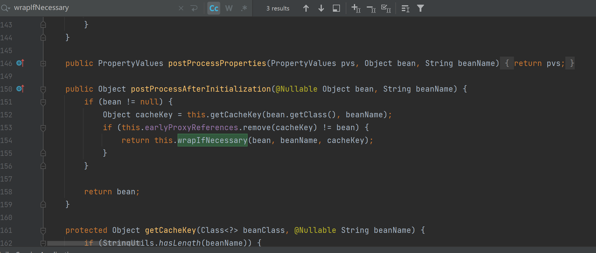
而 AbstractAutoProxyCreator 是 Spring AOP 中自动创建代理的抽象基类，其核心作用是在 Spring 容器创建 Bean 的过程中，自动为符合条件的 Bean 创建代理对象，包括各式各样需要代理类的方法，比如可能的Mapper、Service、Controller等会出现在这里
我的项目中创建了 LoginAspect 切面
@Aspect
@Component
public class LoginAspect {
@Pointcut(value = "@annotation(com.awesome.kuibuservice.annotation.Login)")
public void pointCut() {
}
@Around("pointCut()")
public Object checkToken(ProceedingJoinPoint joinPoint) throws Throwable {
# 切面逻辑
}
}
该切面以一个注解定义切点，并在 UserController 的 getUserInfo 方法加上了注解
@RequestMapping("/user")
@RestController
public class UserController {
@Login
@GetMapping("/userinfo")
public R<UserInfoDto> getUserInfo() {
# 接口逻辑
}
}
以下显示这个 Bean 被扫描到，发现该 Bean 具有适用的增强器 LoginAspect，需要创建代理对象
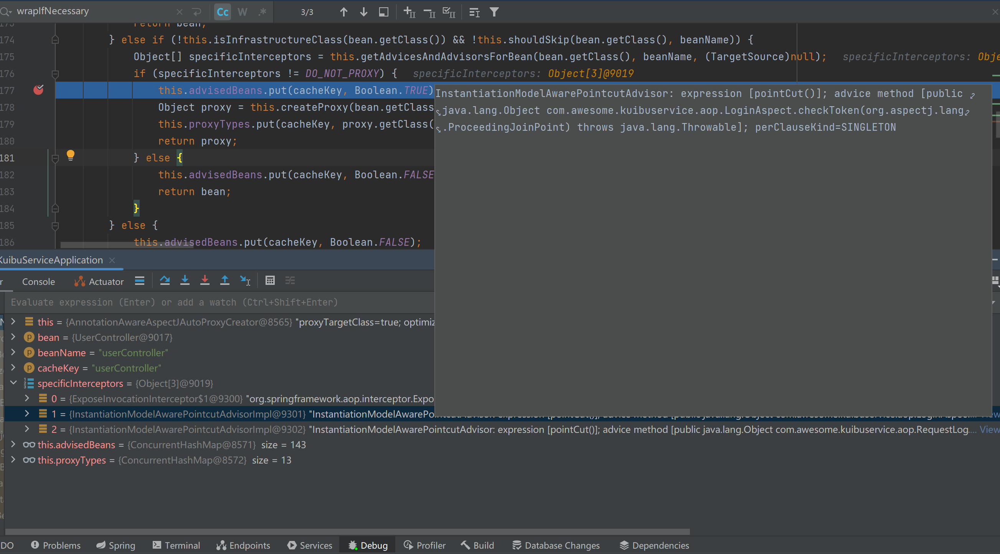
于是调用 createProxy 为这个 Bean 创建代理对象
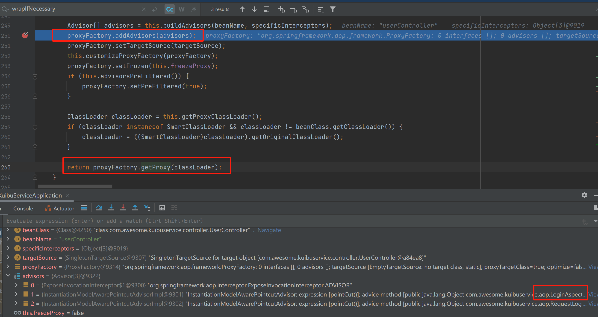
在 createProxy 方法中，将增强器列表交给 ProxyFactory , 并调用 ProxyFactory.getProxy 创建代理对象
在 getProxy 方法中，调用了 createAopProxy 方法，该方法属于 ProxyFactory 的父类 ProxyCreatorSupport ，ProxyCreatorSupport 的父类是 AdvisedSupport，之前被设置给 ProxyFactory 的增强器列表放在该类的 advisors 属性中
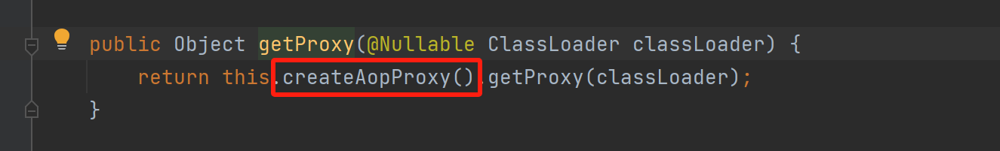
createAopProxy 方法调用 AopProxyFactory 的 createAopProxy 方法，并将 ProxyCreatorSupport 对象本身传入，前面说过 ProxyCreatorSupport 带有增强器列表 advisors
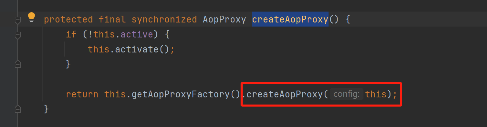
AopProxyFactory 的 createAopProxy 方法，带有增强器列表，根据条件选择创建 JDK 动态代理，或 Cglib 动态代理
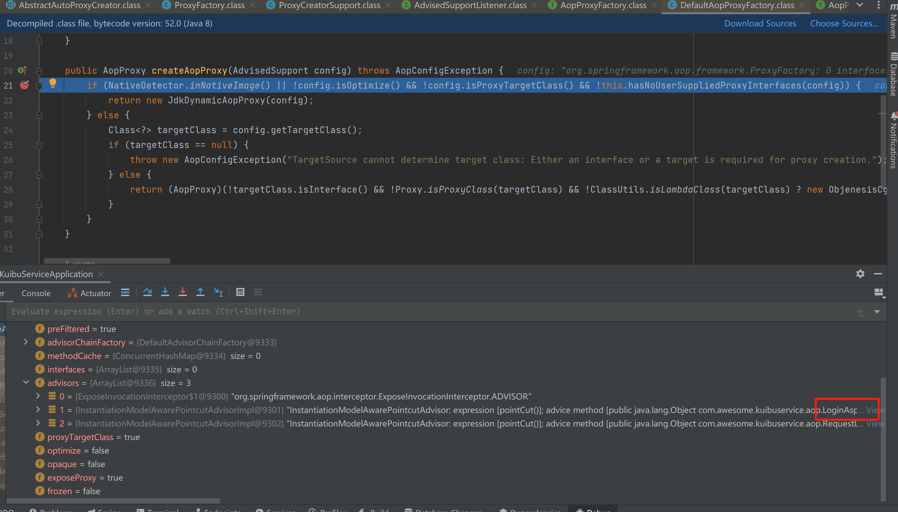
代码解释：
if (NativeDetector.inNativeImage()
||
!config.isOptimize() && !config.isProxyTargetClass() && !this.hasNoUserSuppliedProxyInterfaces(config)
) {
return new JdkDynamicAopProxy(config);
}
- 如果处于原生镜像环境，就使用JDK动态代理
- 如果没有开启优化选项、且没有强制使用 CGLIB 代理目标类、且没有用户提供的代理接口，就使用JDK动态代理
else {
Class<?> targetClass = config.getTargetClass();
if (targetClass == null) {
throw new AopConfigException("TargetSource cannot determine target class: Either an interface or a target is required for proxy creation.");
} else {
return (AopProxy)(!targetClass.isInterface() && !Proxy.isProxyClass(targetClass) && !ClassUtils.isLambdaClass(targetClass) ? new ObjenesisCglibAopProxy(config) : new JdkDynamicAopProxy(config));
}
}
在能获取到目标类的基础上：
如果目标类不是接口、不是 JDK 代理类且不是 Lambda 表达式类，则使用 CGLIB 代理
接下来分别解释两种动态代理的创建
CGLIB 动态代理 #
可能由于版本等原因，我的项目实现的自定义切面，就算让切点加在实现了接口的方法上，为目标类生成的代理类仍是 CGLib 代理
可以设置强制其在切点加在实现了接口的方法上时实现JDK自动代理，以便 Debug ，但是目前注解加在没有实现接口的 controller api 方法上
先讨论 CGLib 动态代理
在这块代码中，if 中的判定结果和含义如下：
- NativeDetector.inNativeImage() 为 false ，表示当前不是运行在原生镜像环境，而是普通Java虚拟机环境
- !config.isOptimize() 为 false ，表示 AOP 启用了某种优化设置
- !config.isProxyTargetClass() 为 false ，表示 AOP 配置指定使用目标类代理，即无论目标对象是否实现接口，都优先使用 CGLIB 代理来创建代理对象，而不是 JDK 动态代理
else 中的判定结果和含义如下：
- !targetClass.isInterface() 为 true，表明目标类不是接口，而是具体类。JDK 动态代理只能对实现了接口的类进行代理，此时应使用 CGLIB 代理
- !Proxy.isProxyClass(targetClass) 为 true，表明目标类不是一个 JDK 动态代理生成的类，可以考虑使用 CGLIB 对其生成代理
- !ClassUtils.isLambdaClass(targetClass) 为 true，表明目标类不是 Lambda 表达式生成的类，可以考虑使用 CGLIB 对其生成代理
于是方法最终生成执行了 new ObjenesisCglibAopProxy(config)，主要功能是利用 CGLIB 库生成目标对象的代理对象，而 config 中包含了需要织入代理对象执行前后的增强器列表
所以在 ProxyFactory.getProxy 方法中，createAopProxy() 返回的是 ObjenesisCglibAopProxy 对象
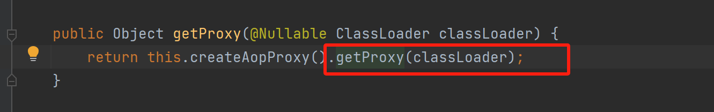
getProxy() 方法由 CglibAopProxy 实现
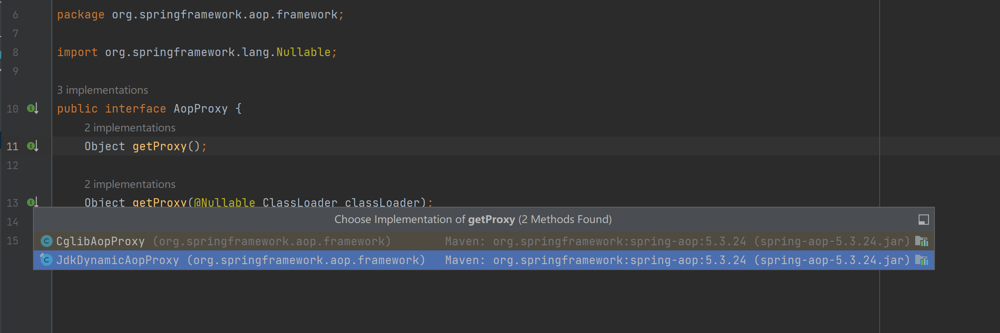
继续 Debug 进入 CglibAopProxy 的 getProxy() 方法实现
其中关键在于，带有增强器方法的 callbacks 被带入代理对象的创建和实例化方法中
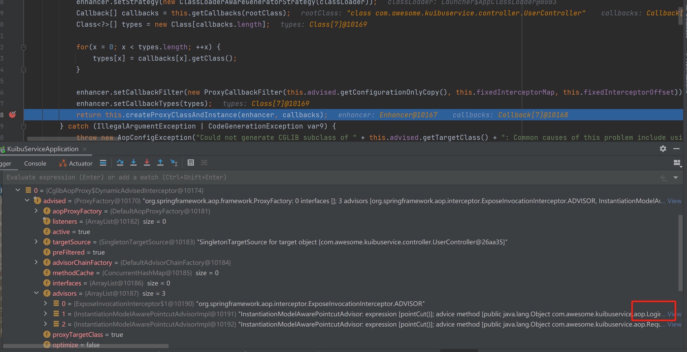
继续 debug createProxyClassAndInstance 方法，实际执行的是 ObjenesisCglibAopProxy 的实现
 可见该方法就是创建代理类并实例化，并将带有增强器列表的 DynamicAdvisedInterceptor 对象设置到代理对象中
可见该方法就是创建代理类并实例化，并将带有增强器列表的 DynamicAdvisedInterceptor 对象设置到代理对象中
以上源码揭示的是，CGLIB 创建代理对象的过程，而这一切代理对象的创建源头是最初 AbstractAutoProxyCreator 类的 BeanPostProcessor 接口的 postProcessAfterInitialization 方法实现被 Spring 扫描执行，所以对于当前被扫描到的 Bean userController，Cglib为其创建了代理对象如下，其代理对象包含了增强器方法，而 Spring 容器实际管理的 Bean 也是这个代理对象，也就是所谓的增强器被织入代理对象 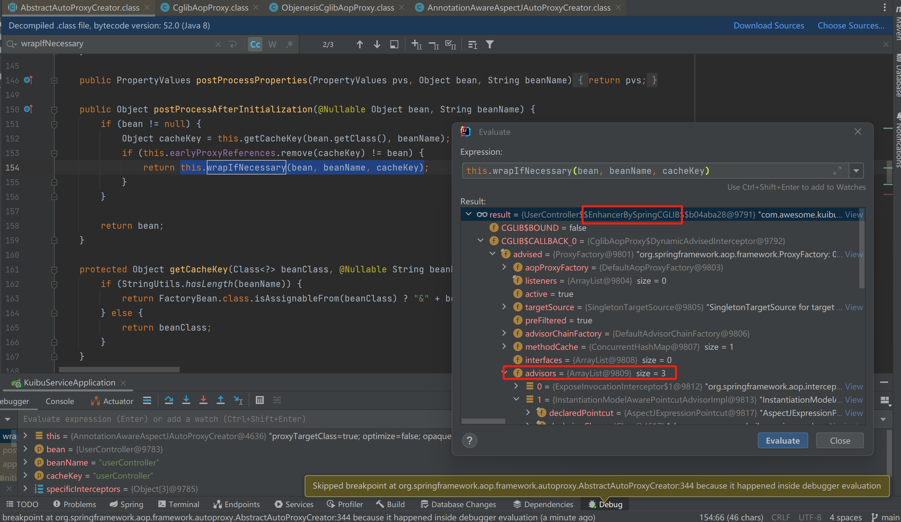
调用 API 执行到该 userController 的方法时，Spring 实际是取得 userController 的 CGLib 代理对象，尝试调用其方法
而在创建 CGLib 代理对象时，是使用字节码技术生成代理类并实例化，可以在 ObjenesisCglibAopProxy 的 createProxyClassAndInstance 查看 enhancer.createClass() 底层创建了类，生成的类中有诸多方法，不过无法看见其实现细节
总之，代理类方法被调用时，会调用其回调方法，而前面提到，我们的代理对象中携带增强器列表的是 DynamicAdvisedInterceptor 对象，其带有自定义切面 LoginAspect 增强器，找到DynamicAdvisedInterceptor 进行 debug，它是 CglibAopProxy 的静态内部类，也是 MethodInterceptor 实现类，在 api 方法 被调用时，触发 MethodInterceptor 拦截，执行其实现的 interceptor 方法
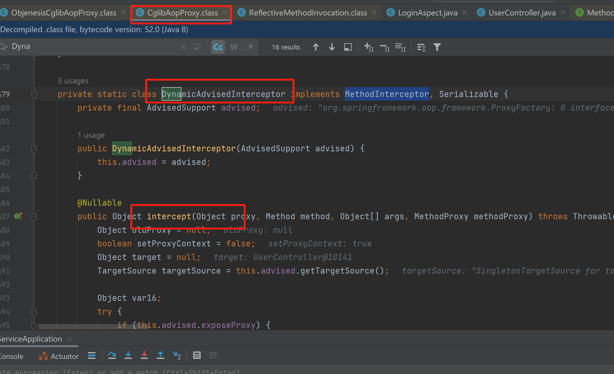
interceptor 方法中debug，可见其构建了拦截器链，并 new CglibMethodInvocation 对象，执行了 proceed 方法
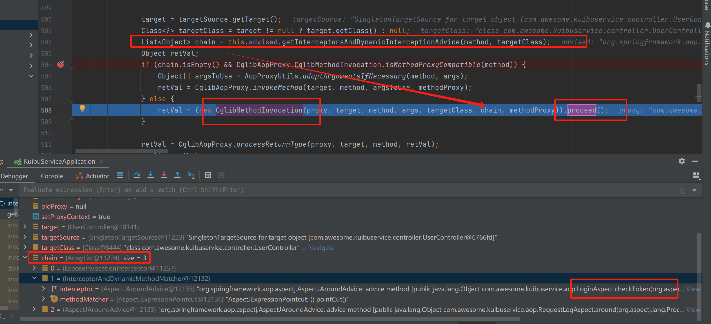
new CglibMethodInvocation 时传入了拦截器链，设置到了父类属性 ReflectiveMethodInvocation.interceptorsAndDynamicMethodMatchers 上
而在执行 proceed 方法时，将拦截器取出并执行，可见执行的拦截器就是我们自定义切面中的代码
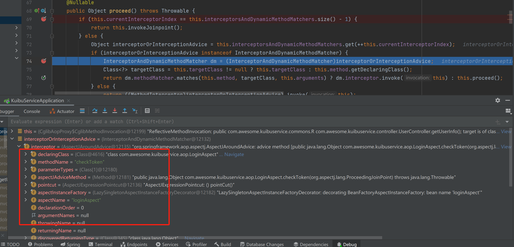
JDK 动态代理 #
通过设置配置文件 spring.aop.proxy-target-class=false 可以生成 JDK 动态代理 无非是在创建代理对象时判定了执行 new JdkDynamicAopProxy(config) 条件分支，使用 JDK 提供的字节码生成技术来生成代理对象，而后的设置增强器列表、执行时执行拦截器方法等流程都和 CGLib 基本一致
总结 #
总的来说，Spring 的动态代理实现过程就是
- 在 Bean 初始化过程中，判断如果需要生成代理对象，就根据当前配置，生成 JDK 动态代理对象或 CGLib 动态代理对象，然后将代理对象作为实际的 Bean 交给 Spring 容器管理
- 代理对象设置了 advice 拦截器方法链 （所谓的切面方法增强 织入目标方法前后）
- 当目标类方法被调用时，实际上是代理对象的方法被调用，而代理对象方法调用目标类方法前后，根据方法上的 advice 拦截器链执行各个切面代码，完成方法的增强功能